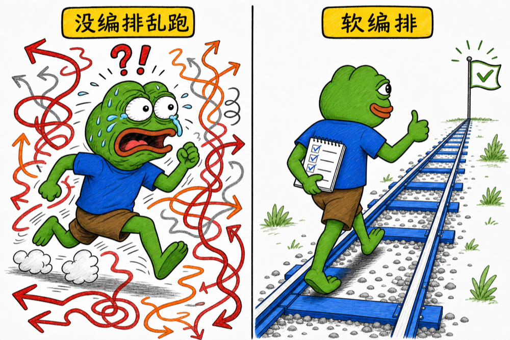

Conference Talk · Agent Skill 设计
当执行者是一个概率模型时，我们如何给它一条
有检查点、有护栏、但依然轻量的路线。

一个天天在用，却很少被追问的问题
我们每天都在用 Skill，甚至自己在写 Skill —— 但有没有真正拆开看过，它里面到底藏着哪些结构、哪些模式？
今天想和大家一起，把这层"结构"挖出来看看。
一个复杂任务，应该按什么顺序、以什么边界、由谁来完成？
编排要回答的，就是这一句话。任务足够简单时不需要它；任务一复杂，就会长出岔路。
关键不是编号本身，而是每一步的输入输出要清楚 —— 没看清楚火从哪冒出来，就急着往墙上浇水，只会把屋子弄得更湿。
并行的收益是快，风险是散。Skill 要把"散"收回来：各查各的边界，但按同一种格式把证据交回来。
和并行的区别：Parallel 关注"能不能同时做"，Orchestrate 关注"谁来决定下一步"。工具和子 Agent 能搬砖，但房子歪没歪，得有人抬头看一眼。
从上到下，逐渐从"要不要做、做哪些步骤"收敛到"怎么做、交付什么"。
越往右，越不能靠模型"自由发挥"。我们不是把风变成石头，而是给帆、舵和锚各自安排好位置。
Skill 不是魔法咒语，而是一份认真写过的团队协作规范 —— 只不过团队里多了一个很会写、很会猜，偶尔也会一本正经胡说八道的 Agent。